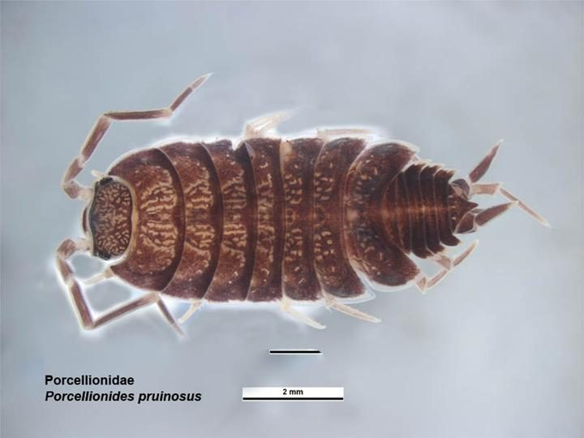

भूमि जूँPowder-blue Woodlouse
Porcellionides pruinosus · Porcellionidae · SFL-0003

- Scientific name वैज्ञानिक नाम
- Porcellionides pruinosus (Brandt, 1833)
- Family कुल
- Porcellionidae
- Hindi हिंदी
- भूमि जूँ
- Local names स्थानीय नाम
- bhumi joon, bhoomi ju, woodlouse, powder blue isopod
- Status here यहाँ की स्थिति
- naturalized
- Movement आवागमन
- Resident, here all year
- Known from कहाँ दर्ज
- Others have published records from the wider Awadh–Purvanchal plain, none yet from Basti–Ayodhya अवध–पूर्वांचल से दूसरों के प्रकाशित अभिलेख, बस्ती–अयोध्या से अभी नहीं
- IUCN IUCN
- not evaluated
- Review समीक्षा
- not yet reviewed
When to look कब देखें
Present all year. साल भर मौजूद।
भूमि जूँ / Powder-blue Woodlouse
Porcellionides pruinosus (Brandt, 1833) — Porcellionidae
भूमि जूँ — नीली-सलेटी आभा वाला, एक सेंटीमीटर से छोटा जीव जो खाद के ढेर, गोबर के ढेर और सड़ती पत्तियों के नीचे रहता है। यह कीड़ा नहीं, झींगे-केकड़े का ज़मीनी रिश्तेदार (आइसोपोड) है, और दुनिया भर में इंसानी बस्तियों के साथ फैला है। सड़ी वनस्पति खाता है, इसलिए खाद बनने में मदद करता है। ढेर उठाने पर तेज़ी से भागता है, गोली की तरह नहीं मुड़ता।
Quick Identification त्वरित पहचान
| Feature | Description |
|---|---|
| Size | Up to about 12 mm (British Myriapod and Isopod Group account); flattened from above |
| Colour | Powder-blue to greyish-blue when young; grey to dark brown in older individuals |
| Body shape | Oval, with seven pairs of legs; telson (tail plate) deeply forked |
| Segments | Distinct segments visible; covered in fine pruinescence (waxy powder) giving blue sheen |
| Legs | Seven pairs; long and whitish (BMIG account) |
| Behaviour | Runs fast when uncovered; does not roll into a ball |
| Habitat | Found in very moist environments; prefers composting and degrading organic matter |
Field tip: Search within moist compost heaps, vermicompost beds, dung heaps, and leaf litter during or just after rain. Look for blue-grey or purplish-brown flattened animals, about a centimetre long, that run off quickly when the heap is opened. The powdery blue-grey bloom and the long pale legs are the marks.
Morphology आकारिकी
Size. Body length up to about 12 mm (BMIG account); legs long and whitish.
Body structure. Flattened from above, oval in outline. The surface carries a fine powdery bloom (pruinescence, the pruinosus of the name) that gives the blue-grey sheen over a purplish-brown ground colour.
Head (cephalon). Small, with two compound eyes positioned dorsally. Antennae moderately long (approximately body length); used for chemoreception and tactile sensation.
Thorax (pereon). Bears seven pairs of walking legs; each leg is jointed and used for deliberate, measured locomotion. No jumping musculature.
Abdomen (pleon). Broad; composed of six segments plus a terminal telson (tail plate) that is deeply forked or notched. Uropods (tail limbs) project from the sides of the terminal segment.
When disturbed. Runs. Woodlice of this family do not roll up; the pill-woodlice (Armadillidium) that roll into a ball are a different family.
Behaviour & Ecology व्यवहार और पारिस्थितिकी
Detritivore and environmental engineer. Porcellionides pruinosus is a specialized consumer of decomposing plant and animal material. It shreds leaves, straw, wood chips, and other organic matter with its mandibles, consuming the material and passing it through the gut where bacteria and fungi complete further decomposition. In this process, complex polymers are broken down into simpler organic compounds and mineral nutrients.
Compost and manure heaps. A synanthropic species: it lives with people, in manure heaps, compost heaps, gardens and allotments (BMIG account), where warmth, moisture and food are constant.
Humidity dependent. Woodlice breathe through spiracles (air holes) on the underside of the abdomen. Despite carrying water-repellent waxes, they lose moisture rapidly in dry conditions and will desiccate and die if not in moist habitat. They are strictly confined to damp environments.
Aggregation. Woodlice gather in clusters in moist refuges, which is thought to reduce water loss (Sutton 1972).
Reproduction. Eggs develop in a brood pouch (marsupium) under the female's body and the young are released as miniature adults. In a synanthropic population in the tropics (Zimbabwe) breeding was continuous through the year, and females put extra effort into more rather than larger young (Dangerfield & Telford 1990).
Life Cycle / Phenology जीवन चक्र
| Stage | What is known |
|---|---|
| Breeding | Continuous through the year in a tropical synanthropic population (Dangerfield & Telford 1990); in temperate Europe confined to the warm months (Sutton 1972) |
| Eggs and young | Carried in the marsupium; released as miniature adults |
| Growth | Repeated moults, the back half of the body shed first, then the front, as in all woodlice (Sutton 1972) |
| Durations | Not published for Indian conditions; no figure is given here |
Behaviour and Diet आहार और व्यवहार
Diet (specialized detritivores):
- Dead leaves and plant litter
- Decomposing wood and cardboard
- Crop residue and straw
- Manure and dung
- Fungal mycelium
- Faecal matter and coprophagy (eating own faeces, common in isopods)
Woodlice do not consume living plant material; they require pre-softened, partially decomposed food. This is why they thrive in compost and dung heaps but are absent from living plants.
Predators / Natural Enemies शत्रु
- Spiders: hunting spiders and orb-weavers prey on woodlice
- Ground beetles and centipedes hunting in the same heaps
- Birds: ground-feeding birds such as mynas turning over litter and dung
Ecological Role and Agricultural Use पारिस्थितिक भूमिका
Composting and vermicomposting. Porcellionides pruinosus plays a crucial role in converting raw organic waste into humus. In vermicomposting systems, woodlice work alongside earthworms, shredding material into finer particles that earthworms then ingest and process further.
Nutrient cycling. By consuming dead organic matter, woodlice release nutrients (nitrogen, phosphorus, potassium) in forms available to plants. Their excreta (frass) enriches compost.
Spreading fungal inoculants. Woodlice consume fungal mycelium and disperse fungal spores through their faeces, aiding in fungal colonization of compost.
Not a pest here. Woodlice are occasionally blamed for nibbling seedlings in very damp glasshouses; in a compost or dung heap this species is a decomposer and nothing else.
Expected Locally स्थानीय रूप से अपेक्षित
Not a field record. Written from published accounts for eastern Uttar Pradesh. No confirmed local sighting yet — if you have seen it, that is what the atlas needs.
अभी तक स्थानीय पुष्टि नहीं। यह विवरण प्रकाशित स्रोतों से है, किसी अवलोकन से नहीं।
GBIF holds published records from the wider Awadh–Purvanchal plain, none yet from Basti–Ayodhya. Look under the edges of manure and compost heaps, in vermicompost beds and under damp boards, pots and bricks, most easily in the monsoon. A first record is a photograph showing the blue-grey bloom and the long pale legs, with place and date, through the About page.
Distribution वितरण
Global range: Cosmopolitan with people; Mediterranean in origin by most accounts, carried around the world in soil, manure and plants.
In India: Scattered GBIF records; no survey of synanthropic woodlice in India is known to us.
In Uttar Pradesh: GBIF holds records from the Awadh–Purvanchal plain.
In Basti district / eastern UP: No published record; expected in compost and dung heaps.
Research Questions शोध प्रश्न
- What is the population dynamics of Porcellionides pruinosus in vermicompost beds over a full annual cycle in eastern UP?
- How much does woodlouse activity accelerate organic matter decomposition compared to decomposition without isopods?
- Can woodlice be cultured commercially for bioconversion of agricultural waste in eastern UP?
- क्या इस जूँ को गोबर की खाद बनाने में मदद के लिए जानबूझकर इस्तेमाल किया जा सकता है?
- What is the carbon and nutrient content of vermicompost enriched by woodlouse activity vs. earthworm-only systems?
Similar Species मिलती-जुलती प्रजातियाँ
| Species | Key Difference | हिंदी |
|---|---|---|
| Armadillidium vulgare (pill woodlouse, also cosmopolitan) | Rolls into a complete ball; slate grey without the bloom; slow | गोली जूँ |
| Porcellio laevis (a cosmopolitan dung-heap woodlouse recorded in India) | Larger, flatter, grey-brown without the blue bloom; slower | — |
Field rule: About a centimetre, blue-grey bloom over purplish brown, long pale legs, runs off fast from a compost or dung heap = Porcellionides pruinosus.
Taxonomy & Classification वर्गीकरण
Original description. Described by Brandt (1833) as Porcellio pruinosus; the genus Porcellionides Miers, 1877 took it in later. The name pruinosus (Latin, frosted) refers to the powdery bloom.
Subspecies. Monotypic — no subspecies are currently recognised.
Family and order placement. Order Isopoda, suborder Oniscidea, family Porcellionidae — the wood lice or terrestrial isopods. Porcellionidae is one of the large families of woodlice, the crustaceans that live on land.
Phylogenetic notes. Woodlice breathe through gill-like plates under the abdomen and are tied to damp places; the bloom of this species is a surface layer, not a waterproofing (Sutton 1972).
IUCN status rationale. Not evaluated. Widespread, common, and increasing with global expansion of composting systems.
Photo Gallery फोटो गैलरी
No photos yet — add field photos to media/species/powder_blue_woodlouse/ and run node scripts/sync_photos.js.
References संदर्भ
- Brandt, J.F. (1833). Conspectus monographiae Crustaceorum Oniscodorum Latreillii. Bulletin de la Société Impériale des Naturalistes de Moscou 6: 171–193. (original description, as Porcellio pruinosus)
- Vandel, A. (1962). Faune de France 66: Isopodes terrestres (deuxième partie). Lechevalier, Paris.
- Sutton, S.L. (1972). Woodlice. Ginn, London.
- Dangerfield, J.M. & Telford, S.R. (1990). Breeding phenology, variation in reproductive effort and offspring size in a tropical population of the woodlouse Porcellionides pruinosus. Oecologia 82: 251–258.
- British Myriapod and Isopod Group. Porcellionides pruinosus (Brandt, 1833), species account. https://bmig.org.uk/species/porcellionides-pruinosus
- GBIF Occurrence Data — Porcellionides pruinosus, Uttar Pradesh. https://www.gbif.org/species/search?q=Porcellionides%20pruinosus
Source file: species/fauna/soil_fauna/powder_blue_woodlouse.md